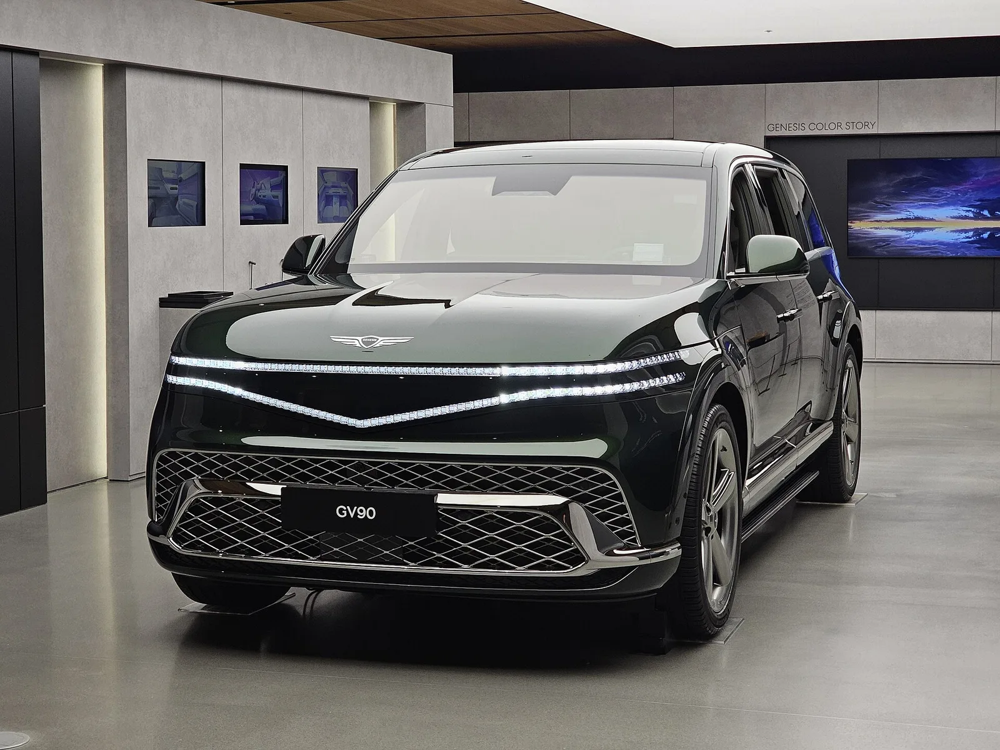
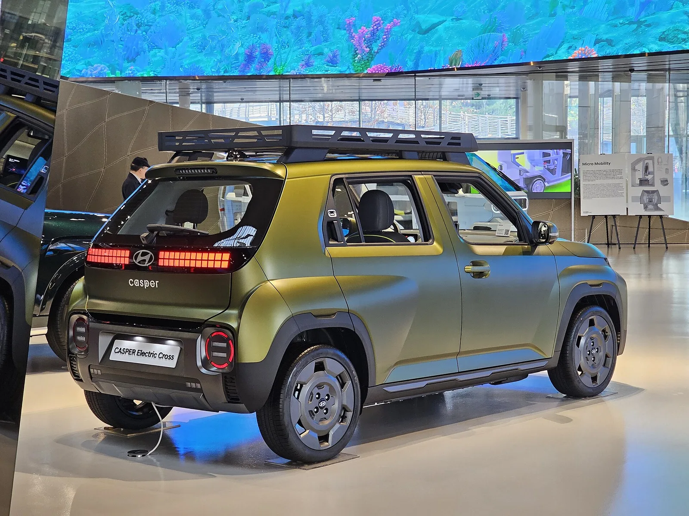
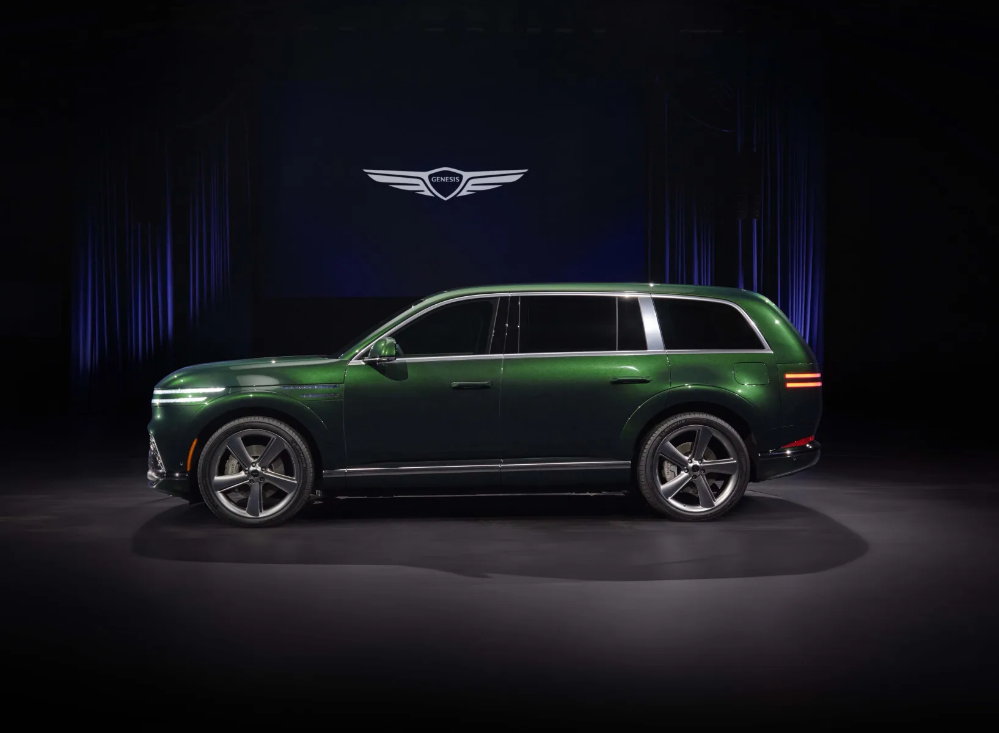
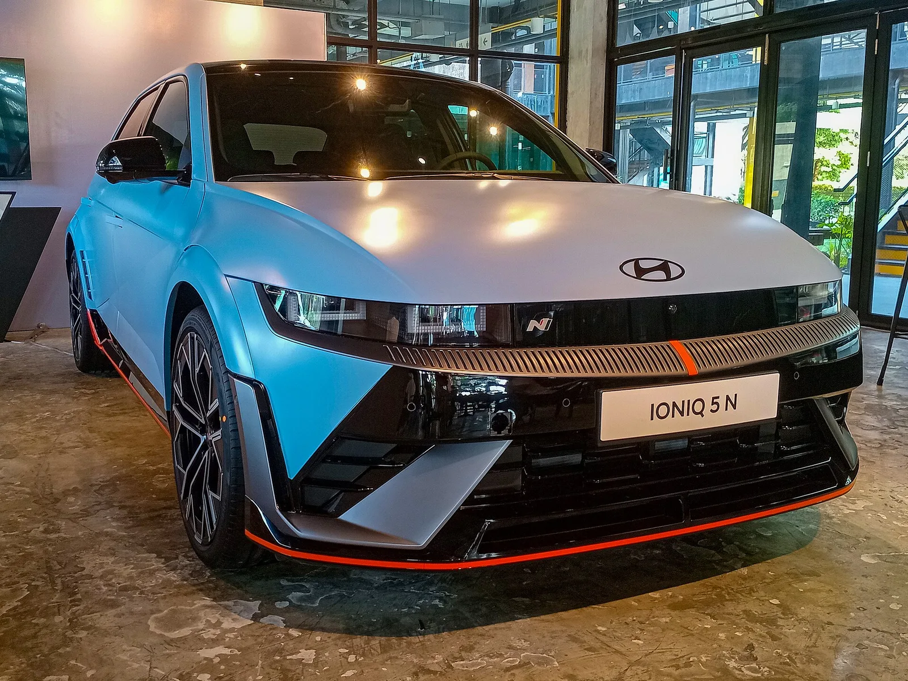

▲ 현대차그룹의 열전이방지(TRP) 배터리 기술이 처음 탑재되는 제네시스 GV90. 올해 4분기 출시 예정이다 ⓒ Damian B Oh, Wikimedia Commons (CC BY-SA 4.0)
순수 전기차 배터리에서 잇따라 화재가 발생하며 소비자 불안이 커지는 가운데, 현대차가 이례적인 행보에 나섰다. 경쟁사들이 침묵을 지키는 사이, 배터리 안전성을 놓고 먼저 마이크를 잡은 것이다.
현대차는 이달 20~21일 진행된 경형 전기 SUV '캐스퍼 일렉트릭 크로스' 미디어 시승회에 앞서, 이례적으로 배터리 안전성을 주제로 한 별도 설명회를 열었다. 최근 메르세데스-벤츠 전기차 화재 사건으로 업계 전반에 대한 불신이 커진 시점이었다. 이 자리에서 현대차 배터리셀개발실을 이끄는 김동건 실장은 "현대차는 전기차 배터리와 관련해 누구보다 많은 경험과 데이터를 축적했다"며 "배터리 기술에 있어서는 최고임을 자신 있게 말씀드린다"고 말했다. 이데일리 보도로 알려진 이 발언은 곧 업계에서 화제가 됐다.
1. 왜 하필 지금 — 벤츠 화재와 업계 전반의 불안
발단은 해외에서 발생한 메르세데스-벤츠 전기차 화재였다. 국내에서도 완속·급속 충전 중이거나 주차 상태의 전기차에서 화재가 발생하는 사례가 이어지면서, 배터리 안전성에 대한 소비자 불신이 브랜드를 가리지 않고 확산되는 분위기다. 국내에서는 지난해 인천 청라 전기차 화재 이후로도 크고 작은 전기차 화재 이슈가 반복되며, 지하주차장 전기차 출입 제한 같은 사회적 논쟁까지 이어진 바 있다.
이런 상황에서 현대차가 택한 대응은 '침묵'이 아니라 '선제적 설명'이었다. 통상 완성차 업체들은 경쟁사 화재 이슈에 대해 직접적인 언급을 자제하는 경우가 많은데, 현대차는 오히려 캐스퍼 일렉트릭 크로스라는 신차 시승회 일정에 맞춰 배터리 안전성 설명회를 별도로 마련했다. 업계에서는 이를 두고 "화재 공포가 전기차 시장 전반의 캐즘(수요 정체)으로 번지기 전에, 선제적으로 신뢰를 회복하려는 시도"라는 해석이 나온다.

▲ 현대차는 캐스퍼 일렉트릭 크로스 미디어 시승회에 앞서 배터리 안전성 설명회를 이례적으로 열었다 ⓒ Damian B Oh, Wikimedia Commons (CC BY-SA 4.0)
2. 핵심 기술 — 열전이방지(TRP), "한 셀이 문제여도 옆 셀로 안 번진다"
현대차가 자신감의 근거로 가장 먼저 꼽는 것은 열전이방지(TRP·Thermal Runaway Prevention) 기술이다. 배터리 화재의 대부분은 내부 단락이나 과충전 등으로 셀 하나에서 시작된 이상 발열이 옆 셀로 옮겨붙으며 '열폭주'로 번지는 구조다. TRP는 이 열전이 경로 자체를 차단해, 한 셀에 이상이 생기더라도 다른 셀로 열이 옮겨가지 않도록 원천적으로 막는 기술이다. 고온의 열이 인접 셀로 전이되는 것을 차단하는 동시에, 발생한 고열 가스는 차량 외부로 배출되도록 설계됐다.
| 기술 | 역할 | 적용·검증 현황 |
|---|---|---|
| 열전이방지(TRP) | 한 셀의 이상 발열이 옆 셀로 번지는 것을 차단 | 200회 이상 반복 시험, 4분기 GV90에 첫 적용 후 전 차종 확대 |
| BMS(배터리관리시스템) | 전류·전압·온도를 실시간 감시해 단락·과충전 등 이상 징후 감지 | 이상 감지 시 고전압 회로 차단, AI 기반 통합 안전관리 개발 중 |
| 완충 안전 설계 | 표시상 100% 완충 상태에도 물리적 여유 용량을 남겨두는 제어 | 현대차·기아 공동 설명, 완충 상태에서도 안전범위 내 관리 |
| 배터리 소재 차등화 | 용도별로 하이니켈·미드니켈·LFP를 구분 적용 | 미드니켈 배터리 내년 상반기 양산 적용 예정 |
여기에 배터리관리시스템(BMS)도 다시 강조됐다. 흔히 '배터리의 두뇌'로 불리는 BMS는 전류·전압·온도를 실시간으로 감시하다가 단락이나 과충전 같은 화재 유발 요인이 감지되면 즉시 고전압 회로를 차단하는 역할을 한다. 현대차·기아는 여기서 한발 더 나아가, 완성차 업계 최초로 AI 기반 통합 안전관리 시스템을 개발 중이라고 밝혔다.

▲ 열전이방지(TRP) 기술이 처음 탑재될 제네시스 GV90의 측면 실루엣. 현대차는 내부 차량에 쓰이는 전체 NCM 각형·파우치 배터리를 대상으로 200회 이상 반복시험을 거쳐 기술 안전성을 검증했다고 밝혔다 ⓒ 제네시스
📍 "100% 완충해도 안전하다"는 말의 진짜 의미
현대차·기아는 소비자가 보는 계기판상 100% 완충 표시가 배터리의 물리적 최대 용량이 아니라고 설명한다. 실제로는 그 이상으로 충전할 수 있는 여유 용량을 의도적으로 남겨둔 상태이며, BMS가 이 여유 범위 안에서 셀 전압을 제어해 과충전으로 인한 열화·발열 위험을 낮춘다는 것이다.
3. BMS 리콜과의 관계 — "결함을 막는 것도, 잡아내는 것도 안전 기술"
공교롭게도 이번 설명회는 현대차·제네시스가 BMS 관련 리콜을 발표한 직후 이뤄졌다. 지난 8월 31일 국토교통부는 아이오닉5 N, 아이오닉6, 아이오닉6 N, 제네시스 GV60 등 총 9583대에 대해 고전압 배터리 소프트웨어 업데이트를 통한 무상 리콜을 공표했다. 배터리 가스 배출 장치로 수분이 유입되면 온도 감지 오류가 발생해 고전압 회로가 차단되고, 주행 중 동력이 상실될 가능성이 있다는 게 리콜 사유였다. 앞서 2월에도 코나 일렉트릭과 일렉시티 등 4개 차종 3만7690대가 BMS 소프트웨어 설계 미흡으로 리콜된 바 있다.
얼핏 보면 '배터리 기술 최고'라는 자신감과 잇단 BMS 리콜은 모순처럼 보인다. 하지만 현대차 설명의 방점은 조금 다른 곳에 찍혀 있다. 리콜 자체가 곧 BMS가 이상 징후를 감지해 사고로 이어지기 전에 차단했다는 증거라는 논리다. 실제로 이번 리콜 사유도 화재가 아니라 '온도 감지 오류로 인한 동력 상실 가능성'을 사전에 포착해 선제적으로 조치한 사례였다. 결함 자체를 아예 없애는 것(TRP)과, 남아있는 결함을 빠르게 찾아내 사고로 번지기 전에 막는 것(BMS·리콜)을 모두 '안전 기술'의 영역으로 묶어 설명하는 셈이다.
✅ 리콜과 화재 방지, 헷갈리지 않아야 할 것
· 8월 리콜은 화재가 아니라 수분 유입으로 인한 온도 감지 오류·동력 상실 가능성이 사유였다
· 리콜 조치는 무상 소프트웨어 업데이트로 진행되며, 부품 교체가 필요한 사안이 아니다
· 해당 리콜은 2026년 8월 31일부터 2028년 2월 29일까지 공표기간이 설정돼 있어, 대상 차주는 이 기간 내 서비스센터에서 무상 조치를 받을 수 있다
리콜 대상 차량과 접수 방법은 자동차리콜센터에서 확인할 수 있다. 자동차리콜센터 바로가기

▲ 아이오닉5 N은 지난달 발표된 고전압 배터리 소프트웨어 무상 리콜 대상에 포함됐다 ⓒ Wikimedia Commons, CC BY-SA 4.0
4. 배터리 소재 전략 — 안전과 가격, 두 마리 토끼 잡기
현대차는 안전성 강조와 동시에 배터리 소재를 용도별로 세분화하는 전략도 함께 공개했다. 급속충전이 중요한 고성능 모델에는 출력이 뛰어난 하이니켈 NCM 배터리를, 합리적인 가격대가 필요한 모델에는 니켈 함량을 낮춘 미드니켈(Mid-Ni) NCM을, 초저가 모델에는 LFP(리튬인산철) 배터리를 각각 적용하는 방식이다. 미드니켈 배터리는 내년 상반기부터 양산 차량에 순차 탑재될 예정이며, LFP 대비 같은 부피에 30% 더 많은 용량을 담을 수 있다는 게 현대차의 설명이다.
| 배터리 종류 | 특징 | 적용 대상 |
|---|---|---|
| 하이니켈 NCM | 높은 출력, 빠른 급속충전 | 고성능·프리미엄 모델 |
| 미드니켈(Mid-Ni) NCM | 니켈 함량 축소로 원가 절감, LFP보다 부피당 용량 30%↑ | 합리적 가격대 모델, 내년 상반기 양산 적용 |
| LFP | 원가 최저, 상대적으로 낮은 에너지 밀도 | 초저가 모델 |
중국 전기차와의 가격 경쟁이 본격화하는 상황에서, 안전성과 원가 절감을 동시에 잡겠다는 게 이 전략의 핵심이다. 관련 배경은 머니투데이 보도에서 자세히 확인할 수 있다. 관련 보도 바로가기

▲ 급속충전이 강조되는 고성능 N 모델군에는 하이니켈 배터리가 우선 적용된다 ⓒ Wikimedia Commons, CC BY-SA 4.0
5. 업계 반응과 남은 과제
업계 반응은 엇갈린다. 배터리 제조사를 가장 먼저 공개하고 화재 이슈마다 비교적 신속하게 입장을 내온 현대차의 대응을 긍정적으로 보는 시각이 있는 반면, "최고"라는 표현 자체가 소비자에게 과도한 확신을 심어줄 수 있다는 우려도 나온다. 배터리 화재는 제조 결함뿐 아니라 외부 충격, 노후화, 충전 환경 등 복합적인 요인으로 발생할 수 있어, 어떤 기술로도 화재 가능성을 '0'으로 만들 수는 없다는 게 배터리 업계의 공통된 시각이다.
다만 TRP 같은 셀 단위 안전 기술과 BMS의 실시간 감지·차단 기능을 이중으로 갖추는 방향 자체는 업계에서도 대체로 긍정적으로 평가받는 흐름이다. 관건은 이런 기술이 실제 양산 차량에 얼마나 빠르고 폭넓게 적용되느냐다. 현대차가 예고한 대로 GV90을 시작으로 TRP 기술이 전 차종에 순차 확대되는지, 그리고 이번 BMS 리콜처럼 잠재적 결함을 조기에 찾아내 조치하는 대응이 일관되게 이어지는지가 소비자 신뢰 회복의 실질적인 척도가 될 전망이다.
6. 요약
현대차가 벤츠 전기차 화재로 업계 전반의 불신이 커진 시점에, 이례적으로 배터리 안전성 설명회를 열고 "배터리 기술은 최고"라는 자신감을 표명했다. 김동건 배터리셀개발실장이 캐스퍼 일렉트릭 크로스 시승회를 앞두고 밝힌 이 발언의 근거로는 열전이방지(TRP) 기술, BMS 실시간 이상 감지, 100% 완충 안전 설계, 용도별 배터리 소재 차등 적용 등이 꼽힌다.
특히 열전이방지 기술은 한 셀의 이상 발열이 다른 셀로 번지지 않도록 원천 차단하는 기술로, 200회 이상 반복 시험을 거쳐 4분기 출시되는 제네시스 GV90에 처음 탑재된 뒤 전 차종으로 확대될 예정이다. 최근 발생한 아이오닉5 N·아이오닉6·GV60 등의 BMS 리콜에 대해서도, 화재가 아닌 동력 상실 가능성을 사전에 감지해 선제 조치한 사례로 설명하며 '결함을 막는 기술'과 '결함을 잡아내는 기술'을 함께 안전성의 근거로 제시했다.
다만 어떤 기술로도 화재 가능성을 완전히 없앨 수는 없다는 게 업계의 공통된 시각인 만큼, 예고된 기술 확대 계획이 실제 양산 차량에 얼마나 일관되게 적용되는지가 소비자 신뢰 회복의 관건이 될 전망이다.